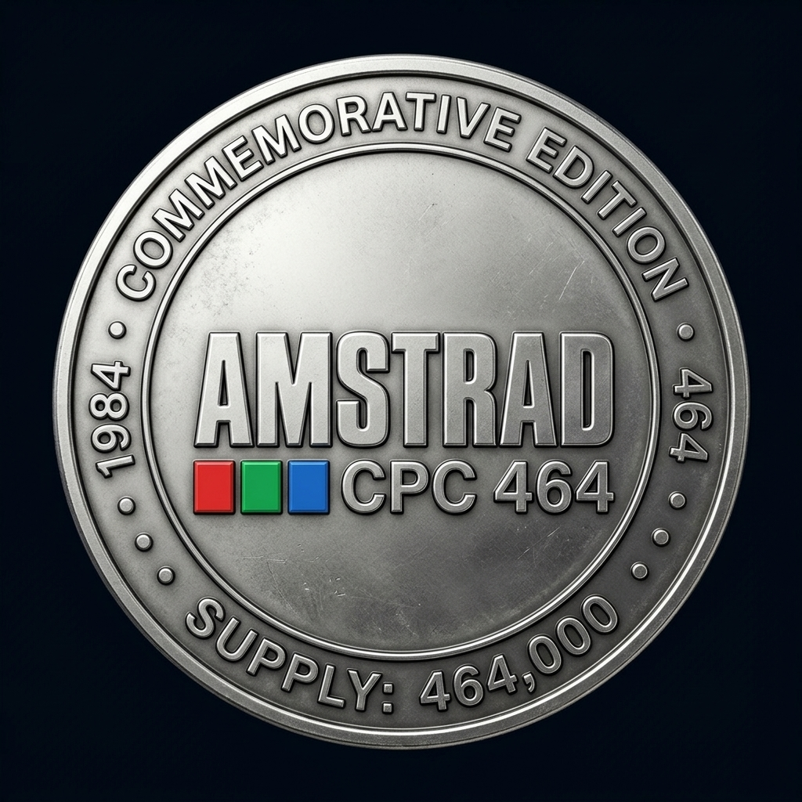

Un homenaje digital e inmutable en la blockchain dedicado a los entusiastas, coleccionistas y usuarios del legendario ordenador de 8 bits que marcó nuestra historia.
El token CPC464 reside de forma permanente en la cadena de bloques pública de TRON. Cualquier miembro de la comunidad puede auditar en tiempo real los movimientos, carteras y el pool de liquidez.